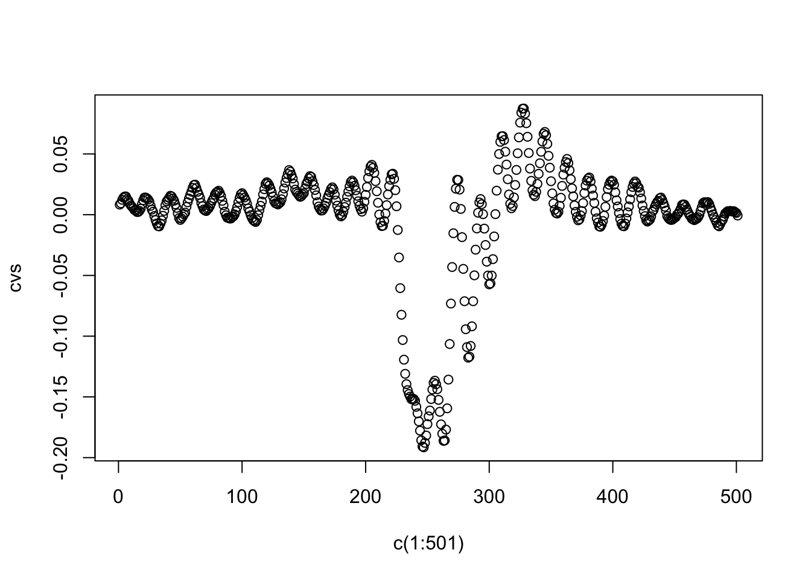

Last updated: 2024-03-12
Checks: 7 0
Knit directory: noe2024/
This reproducible R Markdown analysis was created with workflowr (version 1.7.1). The Checks tab describes the reproducibility checks that were applied when the results were created. The Past versions tab lists the development history.
Great! Since the R Markdown file has been committed to the Git repository, you know the exact version of the code that produced these results.
Great job! The global environment was empty. Objects defined in the global environment can affect the analysis in your R Markdown file in unknown ways. For reproduciblity it’s best to always run the code in an empty environment.
The command set.seed(20240129) was run prior to running
the code in the R Markdown file. Setting a seed ensures that any results
that rely on randomness, e.g. subsampling or permutations, are
reproducible.
Great job! Recording the operating system, R version, and package versions is critical for reproducibility.
Nice! There were no cached chunks for this analysis, so you can be confident that you successfully produced the results during this run.
Great job! Using relative paths to the files within your workflowr project makes it easier to run your code on other machines.
Great! You are using Git for version control. Tracking code development and connecting the code version to the results is critical for reproducibility.
The results in this page were generated with repository version 65ac5a5. See the Past versions tab to see a history of the changes made to the R Markdown and HTML files.
Note that you need to be careful to ensure that all relevant files for
the analysis have been committed to Git prior to generating the results
(you can use wflow_publish or
wflow_git_commit). workflowr only checks the R Markdown
file, but you know if there are other scripts or data files that it
depends on. Below is the status of the Git repository when the results
were generated:
Ignored files:
Ignored: .DS_Store
Ignored: code/.DS_Store
Ignored: data/results/
Unstaged changes:
Deleted: analysis/.nfs00000000003fc5760000002d
Deleted: analysis/.nfs00000000003fc81300000027
Deleted: analysis/.nfs00000000003fc8ee00000029
Deleted: analysis/.nfs00000000003fc8f30000002a
Deleted: analysis/.nfs00000000003fc8f80000002b
Deleted: analysis/.nfs00000000003fc97f0000002c
Deleted: analysis/.nfs00000000003fca2d00000028
Deleted: analysis/.nfs00000000003fcac40000002e
Modified: analysis/Figure3.Rmd
Modified: analysis/SessionInfo.Rmd
Modified: data/mouse_permutations_mean.rds
Modified: data/mouse_permutations_median.rds
Note that any generated files, e.g. HTML, png, CSS, etc., are not included in this status report because it is ok for generated content to have uncommitted changes.
These are the previous versions of the repository in which changes were
made to the R Markdown
(analysis/Supplementary_Figure13.Rmd) and HTML
(docs/Supplementary_Figure13.html) files. If you’ve
configured a remote Git repository (see ?wflow_git_remote),
click on the hyperlinks in the table below to view the files as they
were in that past version.
| File | Version | Author | Date | Message |
|---|---|---|---|---|
| html | 65ac5a5 | Shashikant Koul | 2024-03-11 | Update supplementary tables |
| Rmd | e2712c2 | Shashikant Koul | 2024-03-06 | Reorder figures: add S4,S6,S13 |
| html | e2712c2 | Shashikant Koul | 2024-03-06 | Reorder figures: add S4,S6,S13 |
These packages are necessary to process the data to make these figures
library("reshape2")
library("cowplot")
library("tidyverse")── Attaching core tidyverse packages ──────────────────────── tidyverse 2.0.0 ──
✔ dplyr 1.1.4 ✔ readr 2.1.5
✔ forcats 1.0.0 ✔ stringr 1.5.1
✔ ggplot2 3.4.4 ✔ tibble 3.2.1
✔ lubridate 1.9.3 ✔ tidyr 1.3.1
✔ purrr 1.0.2
── Conflicts ────────────────────────────────────────── tidyverse_conflicts() ──
✖ dplyr::filter() masks stats::filter()
✖ dplyr::lag() masks stats::lag()
✖ lubridate::stamp() masks cowplot::stamp()
ℹ Use the conflicted package (<http://conflicted.r-lib.org/>) to force all conflicts to become errorslibrary("GenomicRanges")Loading required package: stats4
Loading required package: BiocGenerics
Attaching package: 'BiocGenerics'
The following objects are masked from 'package:lubridate':
intersect, setdiff, union
The following objects are masked from 'package:dplyr':
combine, intersect, setdiff, union
The following objects are masked from 'package:stats':
IQR, mad, sd, var, xtabs
The following objects are masked from 'package:base':
anyDuplicated, aperm, append, as.data.frame, basename, cbind,
colnames, dirname, do.call, duplicated, eval, evalq, Filter, Find,
get, grep, grepl, intersect, is.unsorted, lapply, Map, mapply,
match, mget, order, paste, pmax, pmax.int, pmin, pmin.int,
Position, rank, rbind, Reduce, rownames, sapply, setdiff, sort,
table, tapply, union, unique, unsplit, which.max, which.min
Loading required package: S4Vectors
Attaching package: 'S4Vectors'
The following objects are masked from 'package:lubridate':
second, second<-
The following objects are masked from 'package:dplyr':
first, rename
The following object is masked from 'package:tidyr':
expand
The following objects are masked from 'package:base':
expand.grid, I, unname
Loading required package: IRanges
Attaching package: 'IRanges'
The following object is masked from 'package:lubridate':
%within%
The following objects are masked from 'package:dplyr':
collapse, desc, slice
The following object is masked from 'package:purrr':
reduce
Loading required package: GenomeInfoDblibrary("here")here() starts at /Users/skoul/Documents/Projects/cfepi_wflow/noe2024colorz <- c("#DD6627", "#77C8DD", "#004766")
matrix <- readRDS(here("data/cpg_wps_smallfragments.rds"))
cpg <- readRDS(here("data/cpgIslands.hg19.20001.rds"))
geneid_ordered <- order(cpg$beta)
cpg <- cpg[geneid_ordered]
remove <- which(cpg$amount <=2)
cpg <- cpg[-remove]
tracker <- tibble("index" = c(1:nrow(matrix)))
tracker <- tracker[-remove,]
matrix_ordered <- matrix
matrix_ordered <- matrix_ordered[-remove,]
included_genes <- which(rowSums(is.na(matrix_ordered)) <= 10)
tracker <- tracker[included_genes,]
cpg <- cpg[included_genes]
matrix_ordered <- matrix_ordered[which(rowSums(is.na(matrix_ordered)) <= 10),]
matrix_ordered_long <- melt(matrix_ordered)
colnames(matrix_ordered_long) <- c("gene_index", "relative_position", "wps")
matrix_ordered_long[which(matrix_ordered_long$relative_position <= 250),]$relative_position <- matrix_ordered_long[which(matrix_ordered_long$relative_position <= 250),]$relative_position - 251
matrix_ordered_long[which(matrix_ordered_long$relative_position > 250),]$relative_position <- matrix_ordered_long[which(matrix_ordered_long$relative_position > 250),]$relative_position - 250
matrix_ordered_long$relative_position <- matrix_ordered_long$relative_position * 10
matrix_ordered_long$gene_index <- matrix_ordered_long$gene_index * -1
matrix_ordered_long$gene_index <- matrix_ordered_long$gene_index - min(matrix_ordered_long$gene_index) +1
m <- as_tibble(matrix_ordered_long) %>%
pivot_wider(id_cols=gene_index,
names_from=relative_position,
values_from=wps)
m2 <- m %>%
dplyr::select(-gene_index) %>%
as.matrix()
sfun <- function(x, k){
s <- runmean(Rle(x), k, endrule="constant")
as.numeric(s)
}
m3 <- apply(m2, 2, sfun, k=5)
m[, -1] <- m3
x2 <- m %>%
pivot_longer(cols=-1, names_to="relative_position",
values_to="wps") %>%
mutate(relative_position=as.integer(relative_position)) %>%
mutate(method="smoothed")
pos <- sort(c(seq(-2500, 2500, 1000), -10))
brks <- match(pos, sort(unique(x2$relative_position)))
pos[pos == -10] <- 0
downsample <- sample(unique(x2$gene_index), 1000)
downsample <- unique(x2$gene_index)
width <- unit(10, "cm")
x2[which(is.na(x2$wps)),]$wps <- mean(x2[-which(is.na(x2$wps)),]$wps)
#tibfinal <- tibble()
#for(i in unique(x2$relative_position)) {
# tib <- tibble("diff" = (mean(x2[which(x2$relative_position %in% c(i)),][c(1:1000),]$wps) - mean(x2[which(x2$relative_position %in% c(i)),][c((length(unique(x2$gene_index))-1000):(length(unique(x2$gene_index)))),]$wps)),
# "pos" = i)
# tibfinal <- rbind(tibfinal, tib)
#}
p1 <- x2[which(x2$gene_index %in% downsample),] %>%
mutate(wps=ifelse(wps > 250, 250, wps),
wps=ifelse(wps < -250, -250, wps),
gene_index=as.integer(factor(gene_index)),
x=as.integer(factor(relative_position))) %>%
ggplot(aes(x, gene_index)) +
geom_tile(aes(fill=wps), size=0) +
scale_fill_gradientn(colours = c("#004766", "#77C8DD", "#DD6627")) +
scale_x_continuous(breaks=brks,
labels=pos,
expand = c(0,0)) +
scale_y_continuous(expand = c(0,0)) +
labs(x="Position relative to the middle of the CpG-island") +
theme_classic(base_size=10) +
theme(text = element_text(size=20),
plot.title=element_blank(),
panel.border = element_rect(colour = "black", fill=NA, size=0.5),
axis.ticks.y = element_blank(),
axis.text.y = element_blank(),
axis.title.y = element_blank(),
legend.position="bottom",
legend.box="horizontal",
legend.spacing.x = unit(0, "cm"),
legend.key.width = unit(0.217, "snpc"),
plot.margin = margin(0,0.7,0.7,0.7, "cm")) +
guides(fill = guide_colourbar(title.position="bottom", title.hjust = 0.5, title.vjust = 3, barheight = 0.5, frame.colour = "black", frame.linewidth = 0.5, title="cfDNA nucleosomal positioning score"))Warning: Using `size` aesthetic for lines was deprecated in ggplot2 3.4.0.
ℹ Please use `linewidth` instead.
This warning is displayed once every 8 hours.
Call `lifecycle::last_lifecycle_warnings()` to see where this warning was
generated.Warning: The `size` argument of `element_rect()` is deprecated as of ggplot2 3.4.0.
ℹ Please use the `linewidth` argument instead.
This warning is displayed once every 8 hours.
Call `lifecycle::last_lifecycle_warnings()` to see where this warning was
generated.values <- data.frame("var_x" = 1,
"var_y" = max(matrix_ordered_long$gene_index):1,
"value" = cpg$beta)
values$value <- as.numeric(values$value)
p2 <- ggplot(values, aes(x = var_y, y = value)) +
geom_bar(stat="identity", fill = "black") +
labs(x="CpG-islands in order of methylation (beta-value)", y="", title="") +
theme_classic(base_size=10) +
theme(text = element_text(size=20),
axis.title.y.right = element_text(angle=90, vjust = 2),
axis.line.x.bottom = element_blank(),
axis.line.y.right = element_blank(),
plot.title=element_blank(),
axis.ticks.y = element_blank(),
axis.ticks.x.bottom = element_blank(),
axis.text.y = element_blank(),
axis.text.x.bottom = element_blank(),
legend.position="bottom",
plot.margin = margin(0,0,0,0, "cm")) +
coord_flip() +
guides(x.sec = "axis", y.sec = "axis") +
scale_y_continuous(expand=c(0,0), limits = c(0, 1), breaks = seq(0, 1, by=1), labels=c("0.000000" = "0", "1" = "1")) +
scale_x_continuous(expand=c(0,0), position = "top")
p3 <- x2[which(x2$gene_index %in% downsample),] %>%
group_by(relative_position) %>%
summarise(nwps = sum(wps)) %>%
ggplot(aes(relative_position, nwps)) +
labs(x="", y="", title="Cumulative cfDNA nucleosomal positioning score") +
geom_line() +
theme_classic(base_size=10) +
theme(text = element_text(size=20),
#axis.title.x.bottom = element_text(angle=0, vjust = 10),
plot.title=element_text(hjust=0.5, vjust=0, size = 16),
axis.ticks = element_blank(),
axis.text = element_blank(),
axis.title.y = element_blank(),
axis.title.x = element_blank(),
legend.position="bottom",
legend.box="horizontal",
legend.spacing.x = unit(0, "cm"),
plot.margin = margin(0.2,0.7,0,0.7, "cm")) +
scale_x_continuous(breaks=brks,
labels=pos,
expand = c(0,0)) +
ggtitle("Cumulative cfDNA nucleosomal positioning score")
p1_legend <- get_legend(p1)
p1 <- p1 + theme(legend.position='none')
#p2_legend <- get_legend(p2)
#p2 <- p2 + theme(legend.position='none')
#plot_combi <- plot_grid(plot_grid(p1, p2, ncol=2, nrow=1,align = "h", rel_widths = c(10,2)),
# plot_grid(NULL, p1_legend, p2_legend, NULL, ncol = 1, nrow = 4, align="v", axis="b"), #rel_widths = c(10,1))
plot_combi1 <- plot_grid(p3, NULL, ncol=2, nrow=1, rel_widths = c(10,1), align = "h")
plot_combi2 <- plot_grid(p1, p2, ncol=2, nrow=1, rel_widths = c(10,1), align = "h")
plot_combi3 <- plot_grid(p1_legend, NULL, ncol=2, nrow=1, rel_widths = c(10,1), align = "h")
plot_combi_cpg_wps <- plot_grid(plot_combi1, plot_combi2, plot_combi3, NULL, ncol=1, rel_heights = c(2,15,1,0.5))
title <- ggdraw() +
draw_label(
"Nucleosome positioning over CpG-islands",
hjust = 0.5,
size = 20
) +
theme(
# add margin on the left of the drawing canvas,
# so title is aligned with left edge of first plot
plot.margin = margin(0, 0, 0, 7)
)
title <- plot_grid(title, NULL, ncol=2, nrow=1, rel_widths = c(10,1), align = "h")
plot_combi_cpg_wps_title <- plot_grid(title, plot_combi_cpg_wps, ncol = 1, rel_heights = c(1,15))matrix <- readRDS(here("data/tss_wps_smallfragments.rds"))
tissue_key <- read.table(here("data/tissue_key.tsv"),as.is=T,header=T,sep="\t",quote="\"")
conv <- read.table(here('data/labels.txt'),as.is=T,header=T,sep="\t",quote="\"")
rna <- read.table(here('data/RNAtable.tsv.gz'),as.is=T,header=T)
express <- conv[which(conv$Category %in% c("Myeloid")),]$RName
express_df <- rna[c("GeneID", express)]
express_df$mean <- rowMeans(express_df[,c(2:(length(express) + 1))], na.rm=T)
express_df <- express_df[order(-express_df$mean),]
geneid_ordered <- express_df$GeneID
tss <- read.table(file = here("data/transcriptAnno-GRCh37.75.tss20001.tsv"))
colnames(tss) <- c("transcript", "seqnames", "start", "end", "strand")
tss$seqnames <- paste0("chr", tss$seqnames)
tss_gr <- GRanges(tss)
tss_gr <- tss_gr[which(seqnames(tss_gr) %in% paste0("chr", c(1:22)))]
seqlevels(tss_gr) <- paste0("chr", c(1:22))
order <- match(geneid_ordered, tss_gr$transcript)
order <- order [!is.na(order)]
#matrix_ordered <- matrix[order,]
matrix_ordered <- matrix
included_genes <- tss_gr[order]$transcript
included_genes <- included_genes[which(rowSums(matrix_ordered) <= 22500)]
matrix_ordered <- matrix_ordered[which(rowSums(matrix_ordered) <= 22500),]
matrix_ordered_long <- melt(matrix_ordered)
colnames(matrix_ordered_long) <- c("gene_index", "relative_position", "wps")
matrix_ordered_long[which(matrix_ordered_long$relative_position <= 250),]$relative_position <- matrix_ordered_long[which(matrix_ordered_long$relative_position <= 250),]$relative_position - 251
matrix_ordered_long[which(matrix_ordered_long$relative_position > 250),]$relative_position <- matrix_ordered_long[which(matrix_ordered_long$relative_position > 250),]$relative_position - 250
matrix_ordered_long$relative_position <- matrix_ordered_long$relative_position * 10
matrix_ordered_long$gene_index <- matrix_ordered_long$gene_index * -1
matrix_ordered_long$gene_index <- matrix_ordered_long$gene_index - min(matrix_ordered_long$gene_index) +1
m <- as_tibble(matrix_ordered_long) %>%
pivot_wider(id_cols=gene_index,
names_from=relative_position,
values_from=wps)
m2 <- m %>%
dplyr::select(-gene_index) %>%
as.matrix()
sfun <- function(x, k){
s <- runmean(Rle(x), k, endrule="constant")
as.numeric(s)
}
m3 <- apply(m2, 2, sfun, k=5)
m[, -1] <- m3
x2 <- m %>%
pivot_longer(cols=-1, names_to="relative_position",
values_to="wps") %>%
mutate(relative_position=as.integer(relative_position)) %>%
mutate(method="smoothed")
pos <- sort(c(seq(-2500, 2500, 1000), -10))
brks <- match(pos, sort(unique(x2$relative_position)))
pos[pos == -10] <- 0
downsample <- sample(unique(x2$gene_index), 1000)
downsample <- unique(x2$gene_index)
width <- unit(10, "cm")
p1 <- x2[which(x2$gene_index %in% downsample),] %>%
#p1 <- x2 %>%
mutate(wps=ifelse(wps > 250, 250, wps),
wps=ifelse(wps < -250, 250, wps),
gene_index=as.integer(factor(gene_index)),
x=as.integer(factor(relative_position))) %>%
ggplot(aes(x, gene_index)) +
geom_tile(aes(fill=wps), size=0) +
scale_fill_gradientn(colours = c("#004766", "#77C8DD", "#DD6627")) +
scale_x_continuous(breaks=brks,
labels=pos,
expand = c(0,0)) +
scale_y_continuous(expand = c(0,0)) +
labs(x="Position relative to TSS") +
theme_classic(base_size=10) +
theme(text = element_text(size=20),
plot.title=element_blank(),
panel.border = element_rect(colour = "black", fill=NA, size=0.5),
axis.ticks.y = element_blank(),
axis.text.y = element_blank(),
axis.title.y = element_blank(),
legend.position="bottom",
legend.box="horizontal",
legend.spacing.x = unit(0, "cm"),
legend.key.width = unit(0.217, "snpc"),
plot.margin = margin(0,0.7,0.7,0.7, "cm")) +
guides(fill = guide_colourbar(title.position="bottom", title.hjust = 0.5, title.vjust = 3, barheight = 0.5, frame.colour = "black", frame.linewidth = 0.5, title="cfDNA nucleosomal positioning score"))
values <- data.frame("var_x" = 1,
"var_y" = max(matrix_ordered_long$gene_index):1,
"value" = express_df[which(express_df$GeneID %in% included_genes),]$mean,
"gene" = express_df[which(express_df$GeneID %in% included_genes),]$GeneID)
matrix_ordered_long$transcript_id <- values[match(matrix_ordered_long$gene_index, values$var_y),]$gene
matrix_ordered_long$rna_expression <- values[match(matrix_ordered_long$gene_index, values$var_y),]$value
#saveRDS(matrix_ordered_long, "/Users/mnoe/Documents/expression_coverage.rds")
p2 <- ggplot(values[which(values$var_y %in% downsample),], aes(x = var_y, y = log(value + 1))) +
geom_bar(stat="identity", fill = "black") +
labs(x="Genes in order of expression (TPM)", y="", title="") +
theme_classic(base_size=10) +
theme(text = element_text(size=20),
axis.title.y.right = element_text(angle=90, vjust = 4),
axis.line.x.bottom = element_blank(),
axis.line.y.right = element_blank(),
plot.title=element_blank(),
axis.ticks.y = element_blank(),
axis.ticks.x.bottom = element_blank(),
axis.text.y = element_blank(),
axis.text.x.bottom = element_blank(),
legend.position="bottom",
plot.margin = margin(0,0,0,0, "cm")) +
coord_flip() +
guides(x.sec = "axis", y.sec = "axis") +
scale_y_continuous(expand=c(0,0), limits = c(0, 7.835816), breaks = seq(0, 7.835816, by=7.835816), labels=c("0.000000" = "0", "7.835816" = "2528")) +
scale_x_continuous(expand=c(0,0), position = "top")
p3 <- x2[which(x2$gene_index %in% downsample),] %>%
group_by(relative_position) %>%
summarise(nwps = sum(wps)) %>%
ggplot(aes(relative_position, nwps)) +
labs(x="", y="", title="Cumulative cfDNA nucleosomal positioning score") +
geom_line() +
theme_classic(base_size=10) +
theme(text = element_text(size=20),
#axis.title.x.bottom = element_text(angle=0, vjust = 10),
plot.title=element_text(hjust=0.5, vjust=0, size = 16),
axis.ticks = element_blank(),
axis.text = element_blank(),
axis.title.y = element_blank(),
axis.title.x = element_blank(),
legend.position="bottom",
legend.box="horizontal",
legend.spacing.x = unit(0, "cm"),
plot.margin = margin(0.2,0.7,0,0.7, "cm")) +
scale_x_continuous(breaks=brks,
labels=pos,
expand = c(0,0)) +
ggtitle("Cumulative cfDNA nucleosomal positioning score")
p1_legend <- get_legend(p1)
p1 <- p1 + theme(legend.position='none')
#p2_legend <- get_legend(p2)
#p2 <- p2 + theme(legend.position='none')
#plot_combi <- plot_grid(plot_grid(p1, p2, ncol=2, nrow=1,align = "h", rel_widths = c(10,2)),
# plot_grid(NULL, p1_legend, p2_legend, NULL, ncol = 1, nrow = 4, align="v", axis="b"), #rel_widths = c(10,1))
plot_combi1 <- plot_grid(p3, NULL, ncol=2, nrow=1, rel_widths = c(10,1), align = "h")
plot_combi2 <- plot_grid(p1, p2, ncol=2, nrow=1, rel_widths = c(10,1), align = "h")Warning: Removed 1 rows containing missing values (`position_stack()`).plot_combi3 <- plot_grid(p1_legend, NULL, ncol=2, nrow=1, rel_widths = c(10,1), align = "h")
plot_combi_tss_wps <- plot_grid(plot_combi1, plot_combi2, plot_combi3, NULL, ncol=1, rel_heights = c(2,15,1,0.5))
title <- ggdraw() +
draw_label(
"Nucleosome positioning over transcription start sites",
hjust = 0.5,
size = 20
) +
theme(
# add margin on the left of the drawing canvas,
# so title is aligned with left edge of first plot
plot.margin = margin(0, 0, 0, 7)
)
title <- plot_grid(title, NULL, ncol=2, nrow=1, rel_widths = c(10,1), align = "h")
plot_combi_tss_wps_title <- plot_grid(title, plot_combi_tss_wps, ncol = 1, rel_heights = c(1,15))
cvs <- c()
for (i in c(1:501)) {
data <- matrix_ordered[,i]
cv <- cor(data, c(1:length(data)))
cvs <- c(cvs, cv)
}
plot(c(1:501), cvs)
| Version | Author | Date |
|---|---|---|
| e2712c2 | Shashikant Koul | 2024-03-06 |
col <- which(cvs==min(cvs))
t <- readRDS(here("data/tss_cpg_connect_filled.rds"))
t$wps <- NA
t$wps <- matrix_ordered[match(t$trans, values$gene),col]
saveRDS(t, here("data/tss_cpg_connect_filled.rds"))small_size <- plot_grid(plot_combi_cpg_wps_title, NULL, plot_combi_tss_wps_title, rel_widths = c(1,0.1,1), labels=c("a", "", "b"), nrow=1,label_size = 20)
#ggsave(here("docs/figure/Fig_3EF.pdf"), plot = small_size, device = "pdf",width = 20, height=12,units = "in", dpi=600, bg = "white", scale = 0.78)
ggsave(here("docs/figure/Supplementary_Fig_13AB.jpg"), plot = small_size, device = "jpg",width = 20, height=12,units = "in", dpi=600, bg = "white", scale = 0.82)
sessionInfo()R version 4.2.3 (2023-03-15)
Platform: aarch64-apple-darwin20 (64-bit)
Running under: macOS Ventura 13.5.1
Matrix products: default
BLAS: /Library/Frameworks/R.framework/Versions/4.2-arm64/Resources/lib/libRblas.0.dylib
LAPACK: /Library/Frameworks/R.framework/Versions/4.2-arm64/Resources/lib/libRlapack.dylib
locale:
[1] en_US.UTF-8/en_US.UTF-8/en_US.UTF-8/C/en_US.UTF-8/en_US.UTF-8
attached base packages:
[1] stats4 stats graphics grDevices utils datasets methods
[8] base
other attached packages:
[1] here_1.0.1 GenomicRanges_1.50.2 GenomeInfoDb_1.34.9
[4] IRanges_2.32.0 S4Vectors_0.36.2 BiocGenerics_0.44.0
[7] lubridate_1.9.3 forcats_1.0.0 stringr_1.5.1
[10] dplyr_1.1.4 purrr_1.0.2 readr_2.1.5
[13] tidyr_1.3.1 tibble_3.2.1 ggplot2_3.4.4
[16] tidyverse_2.0.0 cowplot_1.1.3 reshape2_1.4.4
[19] workflowr_1.7.1
loaded via a namespace (and not attached):
[1] Rcpp_1.0.12 getPass_0.2-4 ps_1.7.6
[4] rprojroot_2.0.4 digest_0.6.34 utf8_1.2.4
[7] R6_2.5.1 plyr_1.8.9 evaluate_0.23
[10] highr_0.10 httr_1.4.7 pillar_1.9.0
[13] zlibbioc_1.44.0 rlang_1.1.3 rstudioapi_0.15.0
[16] whisker_0.4.1 callr_3.7.3 jquerylib_0.1.4
[19] rmarkdown_2.25 textshaping_0.3.7 labeling_0.4.3
[22] RCurl_1.98-1.14 munsell_0.5.0 compiler_4.2.3
[25] httpuv_1.6.14 xfun_0.42 systemfonts_1.0.5
[28] pkgconfig_2.0.3 htmltools_0.5.7 tidyselect_1.2.0
[31] GenomeInfoDbData_1.2.9 fansi_1.0.6 crayon_1.5.2
[34] tzdb_0.4.0 withr_3.0.0 later_1.3.2
[37] bitops_1.0-7 grid_4.2.3 jsonlite_1.8.8
[40] gtable_0.3.4 lifecycle_1.0.4 git2r_0.33.0
[43] magrittr_2.0.3 scales_1.3.0 cli_3.6.2
[46] stringi_1.8.3 cachem_1.0.8 farver_2.1.1
[49] XVector_0.38.0 fs_1.6.3 promises_1.2.1
[52] bslib_0.6.1 ragg_1.2.7 generics_0.1.3
[55] vctrs_0.6.5 tools_4.2.3 glue_1.7.0
[58] hms_1.1.3 processx_3.8.3 fastmap_1.1.1
[61] yaml_2.3.8 timechange_0.3.0 colorspace_2.1-0
[64] knitr_1.45 sass_0.4.8